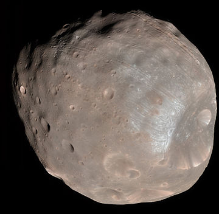
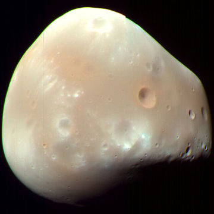

Moons

Mars' First Natural Satelite
Phobos (systematic designation: Mars I) is the larger and closer of the two natural satellites of Mars.
- Diameter (km)
- 27 km
- Mass (kg)
- 1.0659x1016 km
- Orbital period
- 0.31891023 d

Mars' Second Moon
Deimos is the smaller and outermore of the two natural satellites of the planet Mars with a mean radius of 6.2 km, the other being Phobos.
- Diameter (km)
- 15 km
- Mass (kg)
- 1.4762x1015 km
- Orbital period
- 30.312 h